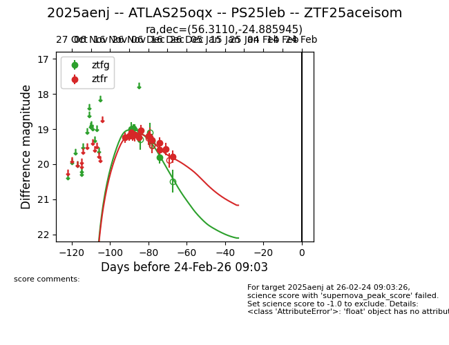
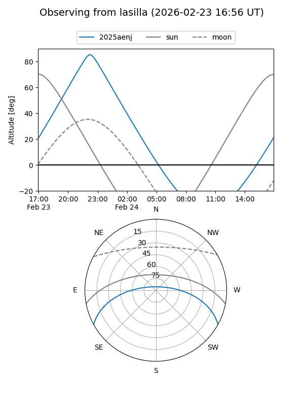
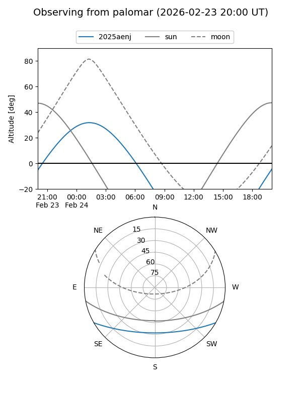
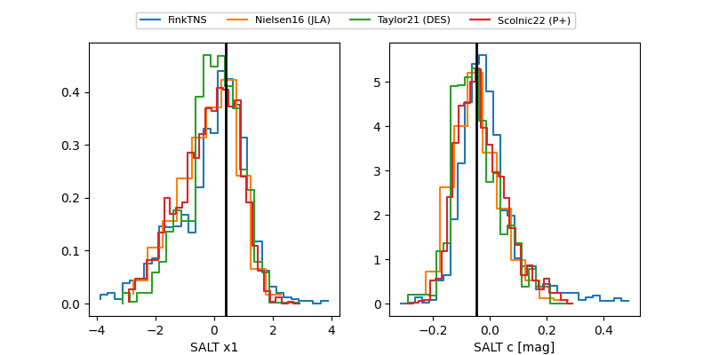

2025aenj
Target 2025aenj at 2025-12-31 10:13
Aliases and brokers:
FINK:
Lasair:
ALeRCE:
TNS:
YSE:
alt names
ZTF25aceisom (ztf,fink_ztf)
2025aenj (tns,yse)
ATLAS25oqx (atlas)
PS25leb (panstarrs)
Coordinates:
equatorial (ra, dec) = 56.3110,-24.88595
equatorial (HMS+DMS) = 03:45:14.65,-24:53:09.40
galactic (l, b) = (219.7172,-51.07644)
Flags:
Photometry:
last ztfg=19.81, ztfr=19.78
4 ztfg, 13 ztfr detections
Lightcurve

Visibility


Additional plots
